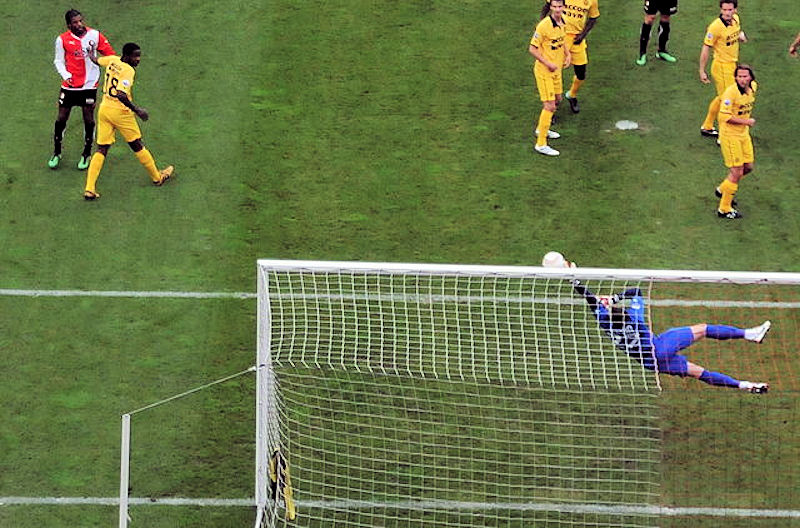

Nadat Roda Feyenoord eerder in de Kuip uitschakelde in de beker
wacht nu een duel in de reguliere competitie.

Hier wordt iemand bedankt....

Feyenoord heeft na lange tijd Vlaar terug terwijl Roda weer kan
beschikken over Hadouir en Hempte. Feyenoord opent sterk en krijgt
enkele bijzonder goede kansen maar Tyton behoedt Roda meermaals voor
een tegentreffer.
foto: sv-rodajc.nl)

Op aangeven van Hadouir kopt Junker de bal achter Van Dijk: 0-1,
(24').

Felicitaties voor Junker.

De voor Hempte ingevallen Bodor krijgt laat in de wedstrijd een
uitgelezen kans om de wedstrijd te beslissen maar stuit op de
keeper.

Ook de voor Hadouir ingevallen Meulens krijgt nog een aardige kans
maar ook deze bal gaat er niet in.

Tyton stompt een schot van Van Haaren weg maar uit de kluts kan
Castaignos alsnog binnen schieten: 1-1, (87').

Een bekertje koffie maakt veel goed ;-)

Roda is nu al tien wedstrijden op rij ongeslagen!